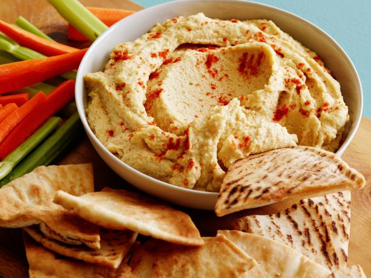
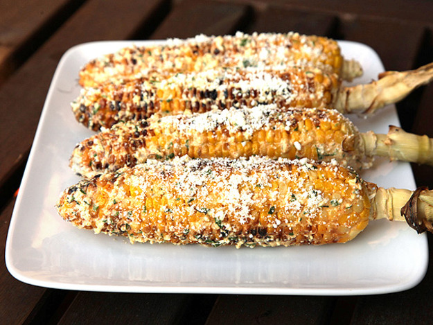
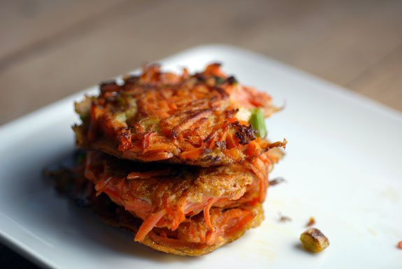

Combine all ingredients in bowl, and stir to combine
Bake for 25-30 min. Broil for 5 min or until cheese turns brown
serve with chopped vegetables and pita chips
Hummus

Ingredients
1 (15-ounce) can chickpeas or 1 1/2 cups (250 grams) cooked chickpeas
1/4 cup fresh lemon juice (1 large lemon)
1/4 cup well-stirred tahini
1 small garlic clove, minced
2 tablespoons extra-virgin olive oil, plus more for serving
1/2 teaspoon ground cumin
2 to 3 tablespoons leftover canned chickpea water
Salt and paprika to taste
Directions
In a foot processor, combine the tahini and lemon juice and process for 1 minute, scrape the sides and bottom of the bowl then process for 30 seconds more.
Add the olive oil, minced garlic, cumin, and a 1/2 teaspoon of salt to the whipped tahini and lemon juice. Process for 30 seconds, scrape the sides and bottom of the bowl then process another 30 seconds or until well blended.
Open, drain, and rinse the chickpeas. Add half of the chickpeas to the food processor and process for 1 minute. Scrape sides and bottom of the bowl, then add remaining chickpeas and process until thick and quite smooth; 1 to 2 minutes.
With the food processor turned on, slowly add 2 to 3 tablespoons of water until you reach the perfect consistency.
Taste for salt and adjust as needed. Serve hummus with a drizzle of olive oil and dash of paprika.
Elotes

Ingredients
6 ears sweet corn, shucked
1/3 Cup nonfat plain yogurt
3 tbs mayonnaise
1 garlic clove, grated or finely minced
1 chipotle pepper canned in adobo sauce, minced
1/2 tsp adobo sauce from the chipotle can
1/4 tsp kosher salt
1/3 cup finely crumbled Cotija cheese (Feta also works)
2 tbs chopped cilantro
1 lime, wedged
Directions
Preheat a lightly oiled grill over medium heat
In small bowl, combine the yogurt, mayonnaise, garlic, chipotle pepper, adobo sauce, and salt. Set aside
Place the corn directly on the hot grill. Cook for 8-10 minuets, rotating corn every 2-3 minutes or until tender and lightly charred
Brush chipotle sauce all over corn and sprinkle with cheese and cilantro. Serve with lime wedge
Vegetable Kugel

Ingredients
2 cup grated raw apple (approx.. 2 medium apples)
2 cup grated sweet potato (approx. 1.5 medium potatoes)
2 cup grated raw carrot (approx. 4 carrots)
2 cup matzah meal
1/2 cup butter, melted
2 tsp salt
2 tsp baking soda
2 tsp cinnamon
2 tsp nutmeg
1 cup sugar (optional)
Directions
Preheat over to 325. Grease a 10x12 pan or muffin tins
Grate vegetables using a food processor. Mix all ingredients together Pour into baking dish. Cover with aluminum foil and bake for 45 minutes. If using muffin tins, bake for 30 minutes
Raise over temp to 350, remove cover, and bake an additional 15 minutes. Slice and eat hot.